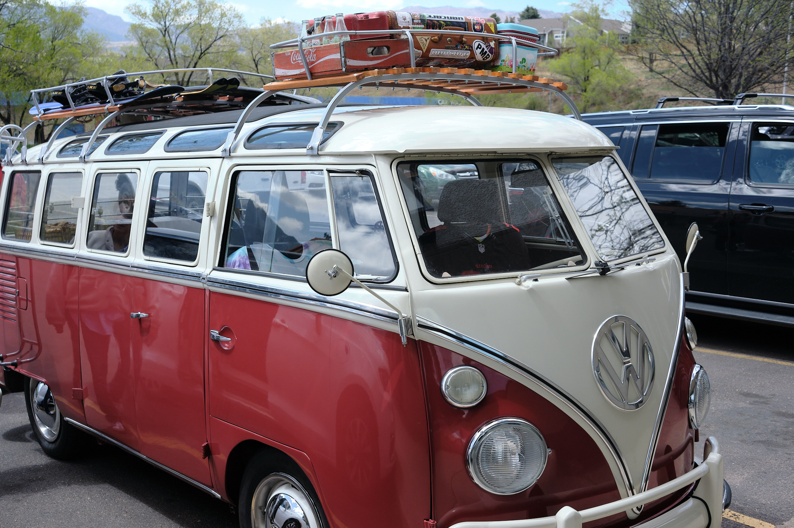
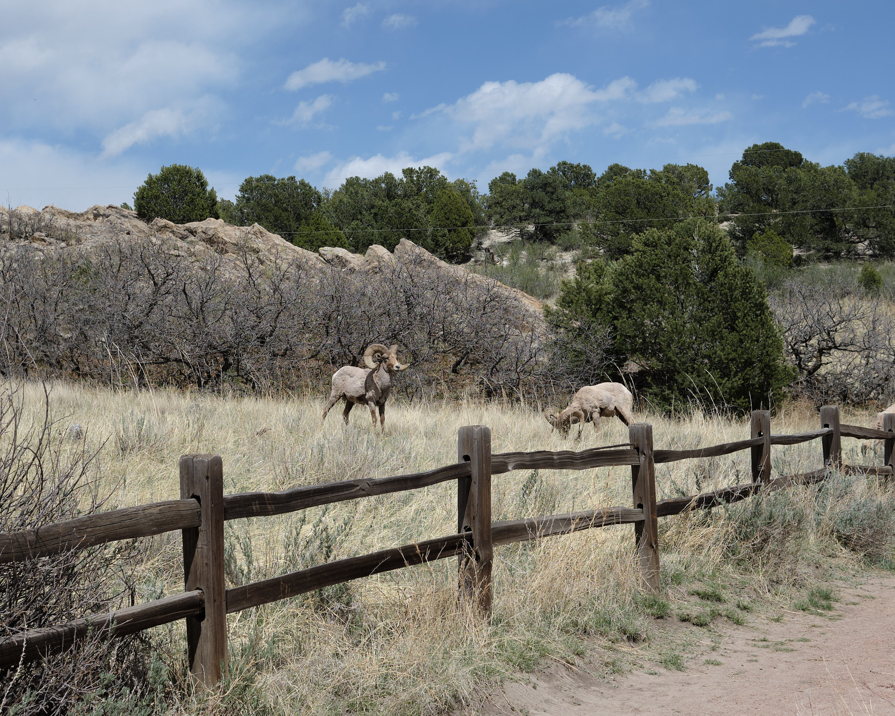
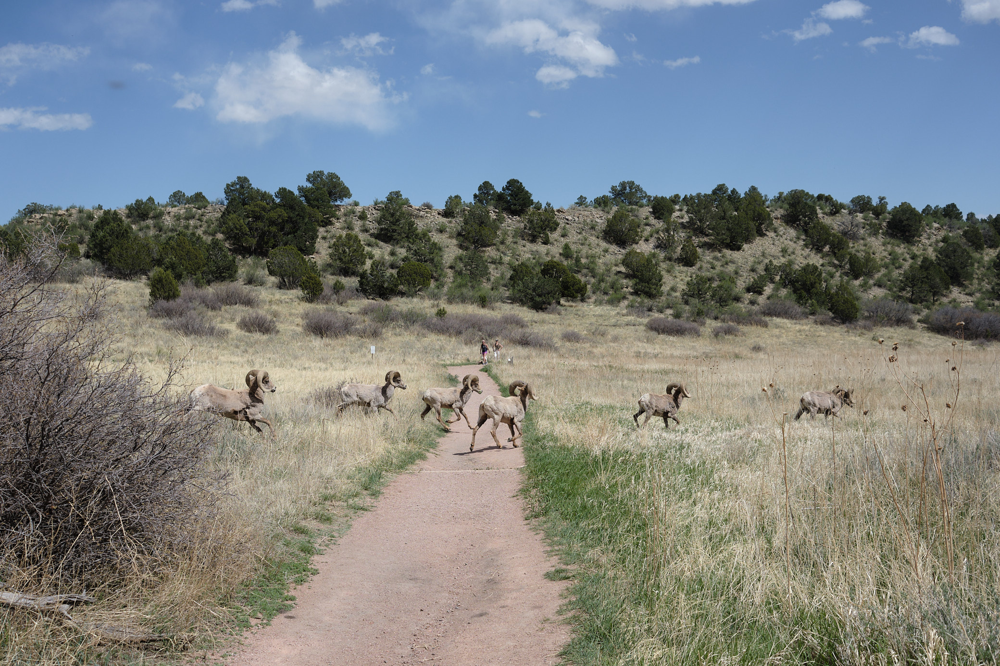
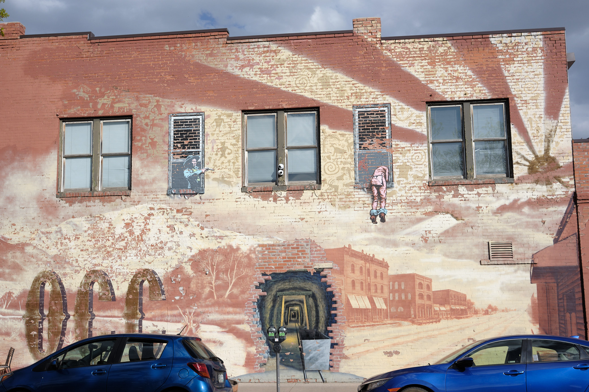
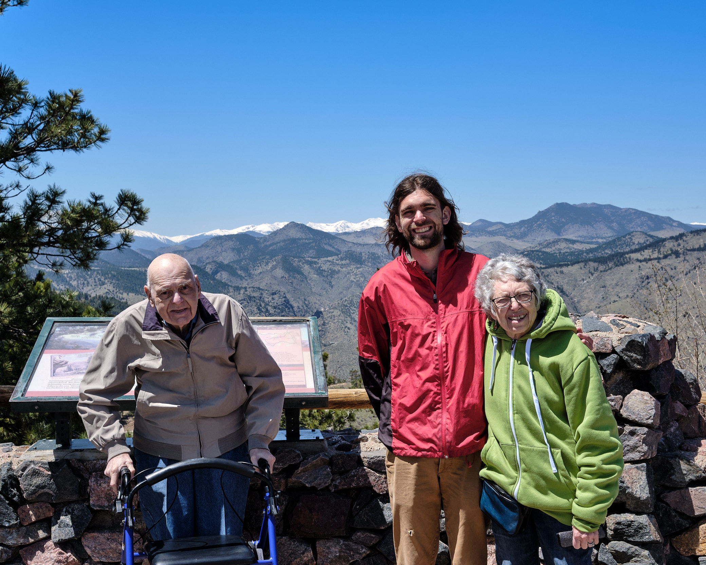
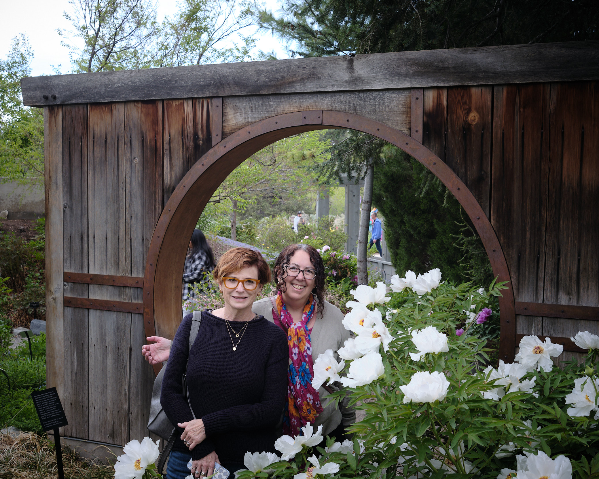
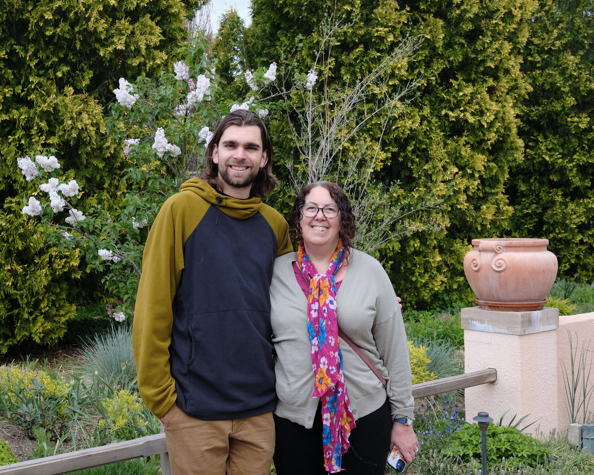

In May 2024, our family converged in the mile-high city of Denver for a beautiful spring weekend. Mom, Paul, and Karen flew in from New Jersey; Audrey from California; and Jacob lives and teaches in Denver. I was already there for a business trip.
First stop was Colorado College, Jacob’s alma mater, pictured above. Did you know Katharine Lee Bates, an English professor at Wellesley College, composed America the Beautiful here in 1882? We asked Mom to put her Wellesley degree to work composing an update. Alas the road to Pike’s Peak was snow-covered, and thus the next verse about “purple mountain majesty” would have to await another day.
Paul approved of Colorado College the Beautiful, but wondered a bit insistently whether Jacob might like to find a job in New York sometime soon?
We picked up this great mini-bus to travel in – well equipped with old glass bottles of coke and snow boards. And if you believe that, I bet you’d enjoy some delicious vegan and gluten-free pastries next to the classic vinyl record shop where we parked.
 Actually, we had a mundane white minivan for our travels. A recent and very generic white van with three rows of seats and power doors. No VW van for us.


The Garden of the Gods, also in Colorado Springs, is an amazing sight. Everyone had a walk among the towering red rocks. (Click any picture above for bigger images). Here’s a nice selfie of me and Audrey:

We quickly fell into a pattern of huge feasts at lunch time, and recommend:
- Tapateria for to-die-for tapas in Colorado Springs
- Teocalli around Denver, for fresh and gluten-free Mexican
- Safta for an Israeli brunch that’s a festival of dips, smoked fish, shakshuka, smoked pastrami, fresh pita hot out of the oven, and pickles of all persuasions.
We ended up skipping dinner every night after eating so much at lunch.
Now of course, families on the road together sometimes butt heads. Yet for a group of six, we usually did a pretty good job of crossing the road together.
 
We had a really nice hotel in Denver called Hotel Teatro, which had comfortable rooms and a great space for hanging out. Free wine at happy hour; free coffee for breakfast; and all the muffins you can smuggle in your plastic lined pockets!

And things went really well at the hotel until Alice tried to skip out without paying the bill. The local gunslinger set her to rights.
Well, enough of this Western tall tale. At last, here are some family photos!
 Alice, Paul and Jacob, atop Lookout Mountain, where Buffalo Bill is buried.
 Audrey and Karen in the wonderful Denver Botanical Garden
 Jacob and Karen also in the Garden